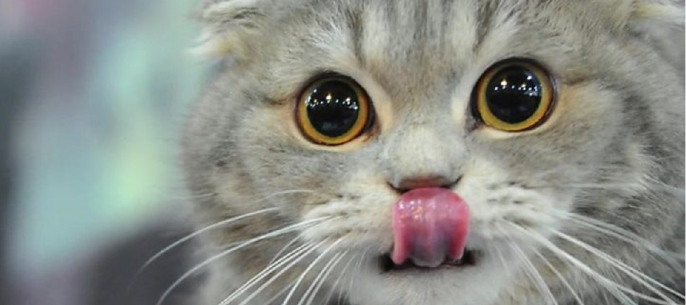

A piacon igen széles a választék, az árak is széles skálán mozognak. Érdemes szem előtt tartani, hogy az egészséges, magas fehérjetartalmú macskatápból általában kevesebb szükséges, betegségek, állatorvosi kiadások oldaláról általában megtérül a drágább macskaeledel ára. Nagyobb kiszerelésben vásárolva szintén jobb minőséghez juthatsz. Kerüld a száraz táp kizárólagos fogyasztását, ez nem tartalmaz elegendő nedvességet. A macskák természetes élőhelyükon alig isznak, természetes táplálékuk fedezi a folyadékszükségletüket. Bent tartott macskák gyakran tartósan folyadékhiányosak, próbáld ivásra ösztönözni például a lakás több pontján elhelyezett itatótállal, csobogóval. Jutalomfalatok helyett is próbálhatsz kígyóuborkát, olívabogyót, sütőtökpürét adni, néhány cica szereti.
Ha odáig fajult a helyzet, hogy külön főzöl a cicának, itt találhatsz pár receptet: Receptek cicáknak.
Gyakori jelenség, hogy a macskák malacokat megszégyenítő ügyességgel talicskáznak az orrukkal a kajában, kiszedik a tányér mellé, majd onnan fogyasztják el. Ezt nem azért teszik, hogy takarításra sarkalljanak, hanem zavaró számukra a tányér pereme, amibe a bajszukkal beleütköznek. Próbáld ki a lapos etetőtálat.
Ebben az esetben igaz, hogy nemcsak a minőség, a mennyiség is nagyon fontos. Szobacicák gyakran választják a mozgásszegény életmódot, gyakori az elhízás, ami esetükben is számos egészégügyi problémához vezethet. Az alábbi táblázat segít megsaccolni, körülbelül milyen mennyiségre van szükség naponta.
| Testsúly | Alultáplált | Normál alkatú | Túlsúlyos |
|---|---|---|---|
| 1,8 kg | 30 g | 30 g | 20 g |
| 2,7 kg | 45 g | 45 g | 30 g |
| 3,6 kg | 70 g | 60 g | 45 g |
| 4,5 kg | 90 g | 70 g | 45 g |
| 5,4 kg | 110 g | 90 g | 60 g |
| 6,3 kg | 120 g | 90 g | 70 g |
| 7,3 kg | 135 g | 110 g | 90 g |
A háztartásban sok olyan étel előfordul, amiből a cicád nem kaphat.